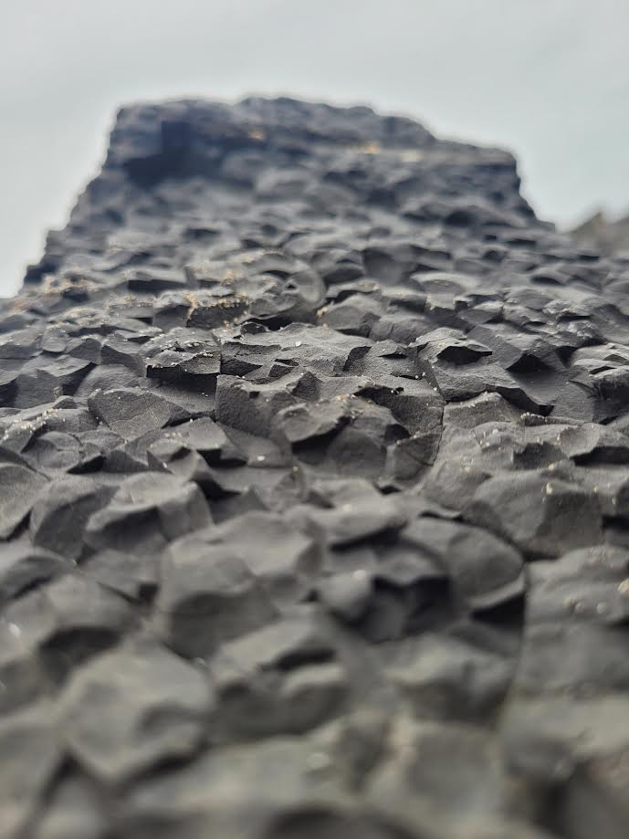
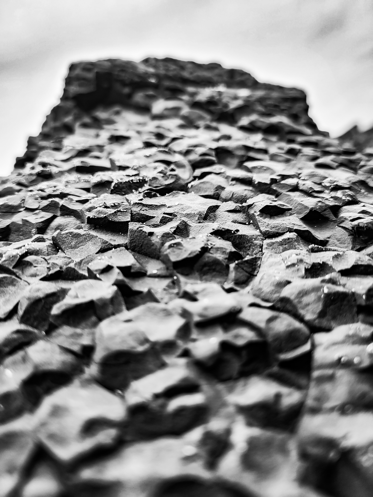

1. Shoot in RAW
Before you even start thinking of taking your photo is to set up your camera, the main setting that is a must change is RAW, RAW helps make the photo be more exposed to different editing abilitys and have a wider rage of colours to make your photo pop
2.What is monochrome
Before talking about the Monochrome Style of photo editing, we would like to tell you that monochrome and black and white are not the same. Most people think these two are synonyms, which is not the case. Monochrome photos are made up of variations of a single color and nothing else. And it can be any color, But black and white images are just made up with the interpretation of the grey color.
3. Convert to Black and White
Black & White Button: In the Basic panel, click the Black & White button to convert your image to grayscale.
4. Adjust Contrast
• Contrast Slider: Increase the contrast to add more separation between the dark and light areas of your image.
• Highlights and Shadows: Lower the highlights to recover details in the bright areas and increase the shadows to recover details
in the dark areas.
5. Adjust the Black & White Mix
• Black & White Mix Panel: Adjust the sliders for individual colors to affect their luminance in the grayscale image. This allows you to control how different tones appear, even though the image is now black and white.
• Reds and Oranges: Often affect skin tones.
• Yellows and Greens: Impact foliage and certain lighting conditions.
• Blues and Aquas: Adjust the brightness of skies and water.
6. Example Quick Settings
Here’s an example of how you might set these adjustments:
• Contrast: +30
• Highlights: -40
• Shadows: +30
• Whites: +20
• Blacks: -30
• Tone Curve: S-curve with subtle adjustments
• Black & White Mix: Adjust sliders based on your image’s needs
Reds: +20
Yellows: -20
Greens: -30
Blues: -20
• Clarity: +20
• Sharpening: Amount +50, Radius 1.0, Detail 25
• Noise Reduction: Luminance +20
These main edits will help you achieve a dynamic and well-balanced monochrome look in Lightroom.


Some of my socials